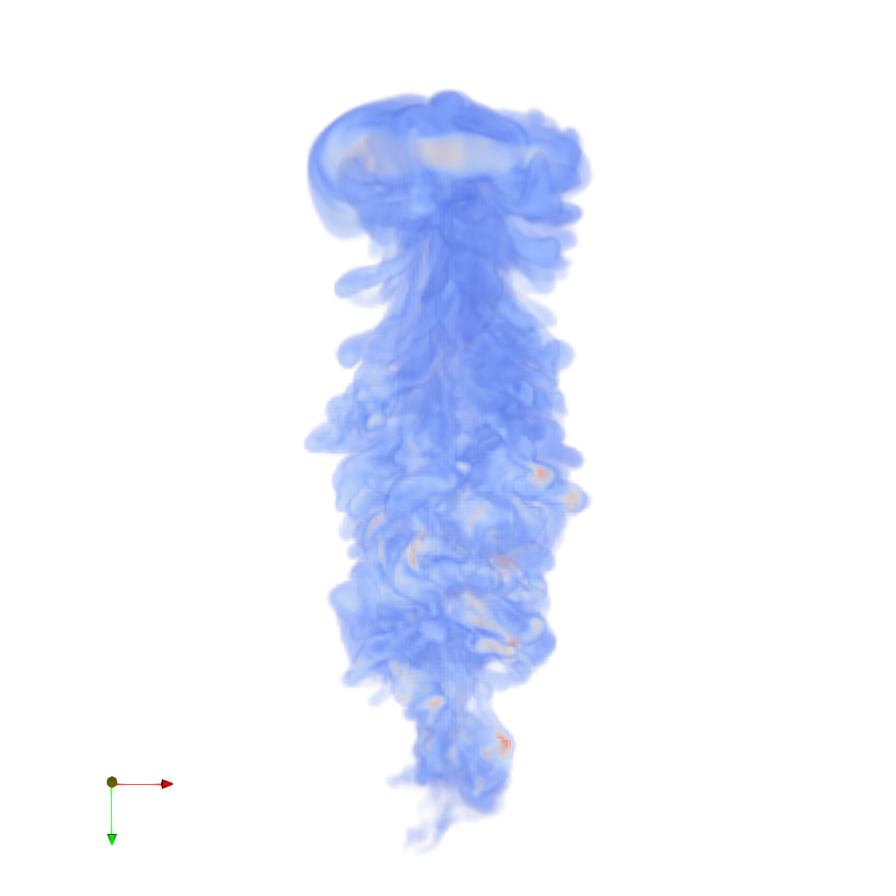

📝 argon-bubble
⚠️ LOW SCORE21/45 (46.7%)
📋 Task Description
Task:
Load the Argon Bubble dataset from "argon-bubble/data/argon-bubble_128x128x256_float32.vtk".
Generate a visualization image of the Argon Bubble scalar field dataset with the following visualization settings:
1) Create volume rendering
2) Set the opacity transfer function as a ramp function across values of the volumetric data, assigning opacity 0 to value 0 and assigning opacity 1 to value 1.
3) Set the color transfer function to assign a warm red color [0.71, 0.02, 0.15] to the highest value, a cool color [0.23, 0.29, 0.75] to the lowest value, and a grey color[0.87, 0.87, 0.87] to the midrange value
4) Set the viewpoint parameters as: [0, 450, 0] to position; [0, 0, -15] to focal point; [0, 0, -1] to camera up direction
5) Visualization image resolution is 1024x1024. White background. Shade turned off. Volume rendering ray casting sample distance is 0.1
6) Don't show color/scalar bar or coordinate axes.
Save the visualization image as "argon-bubble/results/{agent_mode}/argon-bubble.png".
(Optional, but must save if use paraview) Save the paraview state as "argon-bubble/results/{agent_mode}/argon-bubble.pvsm".
(Optional, but must save if use pvpython script) Save the python script as "argon-bubble/results/{agent_mode}/argon-bubble.py".
(Optional, but must save if use VTK) Save the cxx code script as "argon-bubble/results/{agent_mode}/argon-bubble.cxx"
Do not save any other files, and always save the visualization image.
🖼️ Visualization Comparison
Ground Truth

Agent Result
Image not available📏 Vision Evaluation Rubrics
📊 Detailed Metrics
Visualization Quality
9/30
Output Generation
5/5
Efficiency
7/10
Completed in 67.22 seconds (very good)
Input Tokens
255,954
Output Tokens
2,756
Total Tokens
258,710
Total Cost
$0.8092